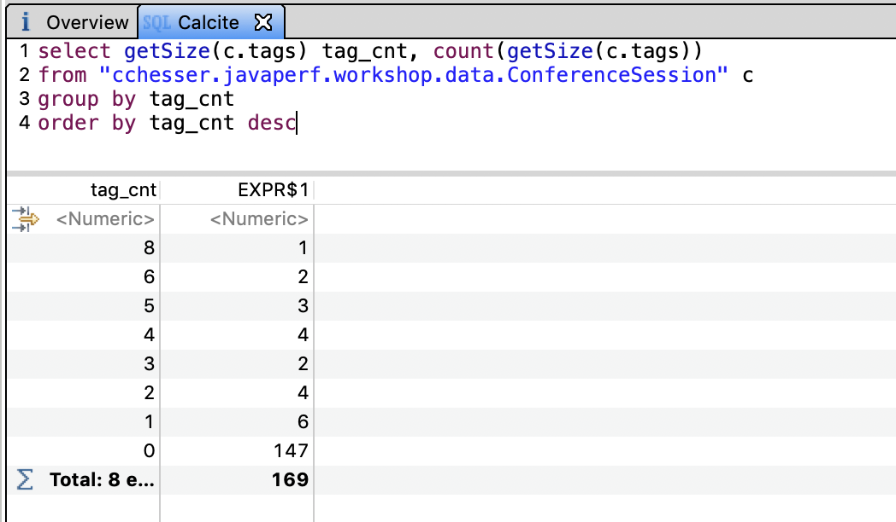
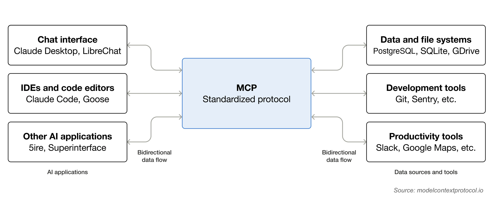

|
Carl Chesser @che55er | che55er.io |
Today’s path
Capture
Why we take a heap dump and the two common commands.
Understand
What a .hprof contains, and why it can be huge.
Analyze + Extend
How MAT reads, indexes, and queries the snapshot with Calcite for a richer query engine.
Connect
How MCP exposes heap analysis to an AI application.
Demonstrate
A live walk through the Java heap workbench.
Why capture a heap dump?
Reactive: an incident happened
OutOfMemoryError
Find which objects retained the heap and what application path kept them reachable.
Proactive: plan capacity
Size the container workload
Understand heap, object, and retention patterns before choosing memory limits and headroom.
A heap dump shows what the JVM was holding at that moment.
JVM memory is bigger than the heap
objects, arrays, class instances
threads, code cache, metaspace, GC structures
JVM, agents, mapped files, runtime overhead
Heap dump answers
What objects existed? How large were they? What kept them reachable?
It does not answer
What happened first, or which request created every object.
Size is not one number
Shallow heap
The memory occupied by the object itself, excluding the objects it references.
Retained heap
The memory that would become collectible if this object were removed from the graph.
GC root
A runtime-held reference, such as a thread or static field, that keeps objects reachable.
Object count
The number of instances of a class; many small objects can consume substantial memory in total.
What is actually inside a .hprof?
- A snapshot of the JVM heap at one point in time.
- Class metadata, object instances, arrays, references, and GC-root information.
- Potentially sensitive data, including strings and application fields.
- A potentially large binary file, often comparable to the live heap.
What can read a .hprof?
https://eclipse.dev/mat/
https://visualvm.github.io/
https://github.com/openjdk/jmc
These tools are covered in the memory-analysis guide.
Why focus on Eclipse MAT?
Open source since 2008.
Mature enough for large production heap dumps.
Versatile enough for reports, object graphs, retained sizes, and OQL.
Licensed under the Eclipse Public License 2.0.
How MAT handles a large .hprof file
.index
.o2hprof.index
.o2c.index
.idx.index
.inbound.index
.outbound.index
.a2s.index
.domIn.index
.domOut.index
.o2ret.index
.threadsCreates a file-based index to assist in different forms of lookups.
What MAT already gives us
A mature engine for reading heap snapshots.
Indexes, retained sizes, dominators, references, reports, and OQL.
When OQL is not enough
MAT OQL provides essential capabilities for quering data; however, it is quite limited.
For joins, grouping, sorting, and aggregation, add Apache Calcite based on the mat-calcite-plugin.
MAT + Calcite: a richer query
SELECT toString(file) AS url,
COUNT(*) AS copies,
SUM(retainedSize(this)) AS retained
FROM java.net.URL
GROUP BY toString(file)
HAVING COUNT(*) > 1
ORDER BY retained DESCNow the agent can ask distribution and relationship questions in SQL.
Calcite keeps the heap as the data source
MAT provides
Objects, fields, references, shallow size, retained size.
Calcite provides
Stronger relational query layer over MAT’s heap-backed schema.

Why add an agent?
Ask a memory question in plain language.
Let the model choose how to resolve the question with the available tools.
It can further explore the data set through a clearly defined query language (OQL).
Model Context Protocol (MCP)
An AI application is configured with the MCP interface (server).
The MCP server describes inputs and outputs.
The model understands this protocol and then can utilize this to utilize specific tools for specific use-cases.

Meet java-heap-mcp
Server owns the session
Load a hprof file into a named project, build or reuse MAT indexes, and return a stable heap handle.
Responses stay bounded
Tools return focused JSON summaries and rows instead of sending
the raw .hprof to the model.
A request through the server
heap_open_projectheap_get_overviewThe model never needs direct access to the raw heap file, it is able to access through well-defined MCP tools.
13 tools, three jobs
Lifecycle
heap_load_dump
load/index a dump
heap_open_project
resume a cached project
heap_list_projects · heap_list_dumps
discover cached state
heap_unload_dump
release an active handle
Orient
heap_get_overview
summary, top classes,
dominators
heap_get_histogram
sort by
retained/shallow/count
heap_get_dominators
find retained-memory roots
heap_get_oql_grammar
learn the supported
SQL/OQL
Investigate
heap_run_oql
query with limit + offset
heap_inspect_object
fields and references
heap_find_path_to_gc_roots
trace reachability
heap_find_leak_suspects
run MAT leak analysis
A tool chain follows the evidence
heap_get_overviewWhat is large?
heap_get_histogramWhich classes dominate?
heap_inspect_objectWhat does this object retain?
heap_find_path_to_gc_rootsWhy is it alive?
heap_run_oqlCan we test a pattern?
heap_find_leak_suspectsWhat does MAT flag?
The model chooses the next tool from the returned evidence.
Natural language becomes a traceable run
A2UI keeps the workbench simple
The model returns declarative JSON.
The UI renders summaries, tables, charts, and graphs.
What A2UI makes possible
The same tool result can become a table.
Numeric rows can become a chart.
References can become a graph.

Lessons Learned
- MCP server functions be fast, but having an agent iterated with it can be slow.
- OQL can still be confusing to an agent without alot of sufficient guidance (system prompt, grammar context).
- Enabling advanced querying capabilities with Apache Calcite can expand how you can answer general questions.
- Utilizing local models help isolate what content is being analyzed, but it can be too slow on some simple operations.
Thank You!
|
|
Carl Chesser @che55er · che55er.io jvmperf.net |